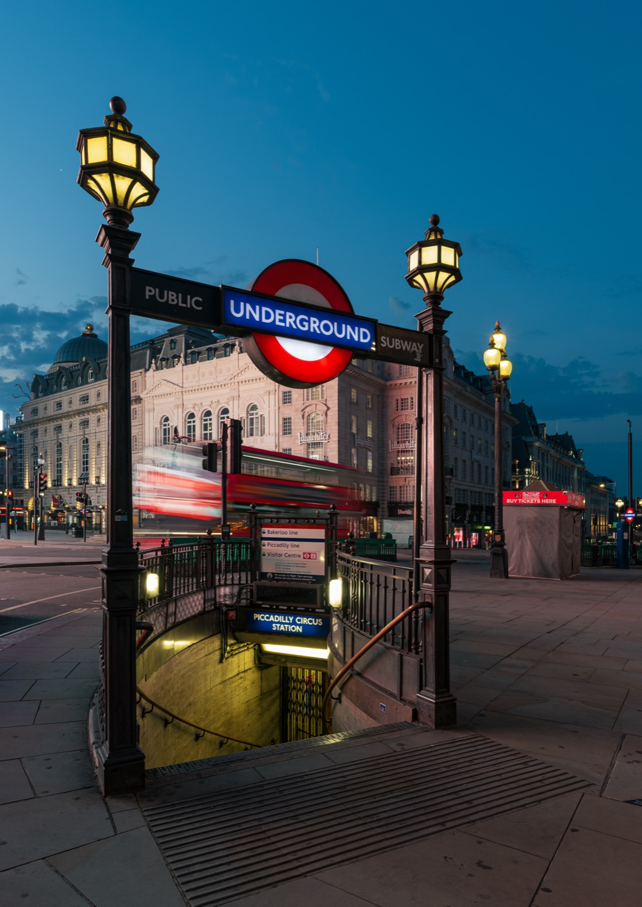

Parte 1
Pianificare
Le esperienze da non lasciarsi scappare, le scadenze da segnare sul calendario e tutto quello che serve sapere prima di salire sull'aereo.
PianificareParte 1
6
Benvenuti a Londra
Una città che si gira a piedi e in metro
Londra è enorme, ma quello che ci interessa sta quasi tutto lungo il Tamigi, tra la Torre e Westminster: cinque chilometri di fiume con mille anni di storia sulle due rive.
Dormiamo ad Aldgate East, all'estremità orientale della City. Da lì la District line corre dritta fino a Westminster e a South Kensington, senza cambi: in venti minuti si è sotto il Big Ben. La Torre e Tower Bridge sono a un quarto d'ora a piedi.
A febbraio Londra non è al suo meglio per il tempo: fa freddo, il cielo è spesso coperto e alle cinque è buio. In compenso le code sono più corte che d'estate, i grandi musei sono gratis e al coperto, e la sera la città accesa dall'alto, dal London Eye o dallo Sky Garden, è uno spettacolo.
La mappa sul telefono
Tutti i luoghi di questa guida, con le linee della metro e il programma giorno per giorno, sono anche sulla mappa online del viaggio: felicevitulano.github.io/londra-2027. Sul telefono si apre come una pagina web, senza installare niente.
PianificareParte 1
7
Benvenuti a Londra
Quattro giorni, otto persone
Arriviamo venerdì 5 febbraio a mezzanotte a Stansted e ripartiamo martedì 9 nel pomeriggio: restano tre giornate piene e una mattina. Non si vede tutto, e va bene così. Questa parte della guida serve a scegliere, a prenotare in tempo e a non avere sorprese.
Come è fatta la guida
Parte 1Pianificare: le esperienze top, le scadenze, i consigli per tema, per i ragazzi e per spendere poco.
Parte 2L'itinerario giorno per giorno: è l'unica parte che cambia se cambiamo il programma.
QuartieriUn capitolo per zona, con mappa, luoghi, orari, prezzi e dove mangiare in otto.
GiteHarry Potter Studios e Windsor.
Parti 5 e 6Capire Londra (storia, famiglia reale, cibo) e la guida pratica: aeroporto, metro, emergenze.
Tre regole per questo viaggio
- 1Prenotare per tempo. In otto non si improvvisa: biglietti a orario e ristoranti vanno fissati prima. Le date sono a p. 29.
- 2Fuori la mattina, dentro il pomeriggio. Le visite all'aperto prima delle 16:30; dopo, musei, panorami e cena.
- 3Una carta contactless a testa per gli adulti. Si paga così la metro, e quasi tutto il resto.
- Valuta
- Sterlina (£). Cambio indicativo: 1 £ = 1,17 € (agosto 2026).
- Ora
- Un'ora indietro rispetto all'Italia.
- Entrare
- Passaporto ed ETA per tutti, ragazze comprese (p. 23).
- Prese
- Tipo G, a tre poli: serve l'adattatore.
- Emergenze
- 999 o 112.
PianificareParte 1
8
Le 15 esperienze top · 1
I gioielli della Tower of London
Una fortezza normanna di quasi mille anni, con dentro la collezione di gioielli più famosa del mondo.
È stata palazzo reale, prigione, zecca e perfino zoo. Oggi custodisce i Crown Jewels, con il Cullinan I nello scettro reale, e la sorvegliano gli Yeoman Warder, i "Beefeater", che fanno tour pieni di storie di prigionieri e decapitazioni. E poi i corvi: la leggenda dice che se lasciano la Torre cade il regno, così ce ne sono sempre almeno sei.
- Prezzi
- Adulti £38, 5-17 anni £19: per noi 8, £247.
- Il trucco
- Entrare all'apertura e andare subito ai gioielli, prima della coda.
- Vedi
- Tower, City e Aldgate, p. 76
PianificareParte 1
9
Le 15 esperienze top · 2
Camminare sul vetro di Tower Bridge
Quarantadue metri sopra il Tamigi, con gli autobus rossi che passano sotto i piedi.
Il ponte del 1894 si attraversa gratis, ma il biglietto porta sulle passerelle alte tra le due torri, con tratti di pavimento trasparente, e giù nella sala macchine vittoriana che alzava i bracci a vapore. Il ponte si apre ancora centinaia di volte l'anno per le navi alte: gli orari sono sul sito, ed esserci sopra in quel momento è il colpo di fortuna della visita.
- Prezzi
- Adulti £18, 16-17 anni £13,50, 5-15 anni £9: per noi £121,50.
- Il trucco
- La foto migliore della Torre si fa dal lato sud del ponte.
- Vedi
- Tower, City e Aldgate, p. 78
PianificareParte 1
10
Le 15 esperienze top · 3
Il tramonto dallo Sky Garden
Un giardino tropicale al 35° piano, sotto una cupola di vetro, e tutta Londra che si accende intorno. Gratis.
È in cima al Walkie Talkie, il grattacielo che si allarga verso l'alto. Si entra con un biglietto a orario e si resta al massimo un'ora. I biglietti escono il lunedì mattina, tre settimane prima: chi arriva tardi trova tutto esaurito. Il piano B è Horizon 22, al 58° piano di un grattacielo vicino, anche questo gratis e senza limite di tempo.
- Prezzi
- Gratis, con prenotazione.
- Il trucco
- La fascia delle 16:00-16:45 nel weekend: si vede la città passare dal giorno alla notte.
- Vedi
- Tower, City e Aldgate, p. 80
PianificareParte 1
11
Le 15 esperienze top · 4
Westminster Abbey
Dal 1066 qui sono stati incoronati tutti i re e le regine d'Inghilterra, e una trentina vi sono sepolti.
Elisabetta I e Maria Stuarda, cugine e nemiche, riposano a pochi metri l'una dall'altra. Nel Poets' Corner ci sono Chaucer e Dickens, poco più in là Isaac Newton e Stephen Hawking. Sulla Coronation Chair, il trono di legno del 1308, si leggono ancora le scritte incise a coltello dagli scolari del Settecento.
- Prezzi
- Adulti £32, 6-17 anni £14: per noi £202.
- Il trucco
- La domenica non si visita, ma alle 15 i vespri cantati sono gratis.
- Vedi
- Westminster e South Bank, p. 100
PianificareParte 1
12
Le 15 esperienze top · 5
Dentro il Parlamento, sotto il Big Ben
Il palazzo dove si governa il Regno Unito si visita solo il sabato, e la campana più famosa del mondo si raggiunge salendo 334 gradini.
La visita passa per la Westminster Hall del 1097, dove fu processato Guy Fawkes, la Camera dei Lord con il trono e la Camera dei Comuni, dove il re non può entrare dal 1642. Il tour del Big Ben è aperto dagli 11 anni, quindi a tutte le ragazze, ma i biglietti finiscono in poche ore.
- Prezzi
- Visita guidata: per noi £270. Audioguida in italiano: circa £191. Big Ben: £380.
- Quando
- A febbraio 2027 visite il 6, 20 e 27: è già prenotabile.
- Vedi
- Westminster e South Bank, p. 102
PianificareParte 1
13
Le 15 esperienze top · 6
Il Cambio della Guardia
Giubbe rosse, colbacchi di pelo d'orso alti 45 centimetri e una banda militare davanti a Buckingham Palace. Gratis.
Le guardie sono soldati veri dei reggimenti della Household Division. La cerimonia completa, con la banda, dura circa 45 minuti e si fa il lunedì, il mercoledì e il venerdì alle 11; la domenica alle 10 c'è una parata più breve. Il calendario di febbraio esce a gennaio, e con la pioggia forte la cerimonia può saltare.
- Arrivare
- Almeno 45 minuti prima, sui gradini del Victoria Memorial.
- Il trucco
- Senza folla: la vecchia guardia che si forma a Friary Court verso le 10:45.
- Vedi
- Westminster e South Bank, p. 105
PianificareParte 1
14
Le 15 esperienze top · 7
Un giro sul London Eye
Mezz'ora per un giro completo, 135 metri sopra il Tamigi, con il Parlamento sotto i piedi.
Doveva restare in piedi cinque anni, per il Duemila; è diventato il simbolo della Londra moderna. Le capsule sono 32, ma numerate fino a 33: la 13 non c'è, per scaramanzia. Girano così piano che si sale e si scende senza fermare la ruota. Con il vento forte si ferma, e il biglietto viene spostato.
- Prezzi
- Online da £29 adulti e £26 fino a 15 anni: per noi circa £226. Alla cassa costa di più.
- Il trucco
- Salire tra le 16:15 e le 16:45: si parte con la luce e si scende con la città illuminata.
- Vedi
- Westminster e South Bank, p. 106
PianificareParte 1
15
Le 15 esperienze top · 8
Il bunker di Churchill
Sotto i ministeri di Whitehall, le stanze da cui Churchill guidò la guerra sono rimaste come il giorno della vittoria.
Nella Map Room ci sono ancora le puntine sulle carte e i telefoni colorati. C'è la camera da letto di Churchill, e una porta con la scritta "toilette" che nascondeva la linea diretta con la Casa Bianca. Il museo racconta la sua vita con oggetti, lettere e video: alle ragazze piace più di quanto si pensi.
- Prezzi
- Adulti £34, 5-15 anni £17 (la ragazza di 16 anni paga intero): per noi £238.
- Il trucco
- La prima fascia, alle 9:30: i corridoi sono stretti e si riempiono presto.
- Vedi
- Westminster e South Bank, p. 108
PianificareParte 1
16
Le 15 esperienze top · 9
Il mondo intero al British Museum
Due milioni di anni di storia umana sotto lo stesso tetto, e non si paga il biglietto.
Qui c'è la stele di Rosetta, la pietra con lo stesso testo in tre scritture che ha permesso di decifrare i geroglifici. Ci sono le mummie egizie, con i loro sarcofagi dipinti, e le sculture del Partenone, che la Grecia chiede indietro da decenni. Si entra nella Great Court, il cortile coperto da un tetto di vetro e acciaio, il più grande d'Europa: da lì si sceglie una sala e si lascia perdere il resto. Tutto in un giorno è impossibile.
- Prezzi
- Gratis. Conviene prenotare un ingresso a orario, anche quello gratuito. Le mostre temporanee si pagano.
- Il trucco
- Il venerdì resta aperto fino alle 20:30. Gli altri giorni 10-17.
- Vedi
- Altri quartieri: Bloomsbury.
PianificareParte 1
17
Le 15 esperienze top · 10
Dinosauri e balene al Natural History Museum
Una cattedrale vittoriana in terracotta, con lo scheletro di una balenottera azzurra appeso sopra l'ingresso.
Si chiama Hope, è lunga 25 metri ed è appesa nella Hintze Hall dal 2017, al posto del vecchio diplodoco. Poi ci sono i dinosauri, con un tirannosauro che si muove, e la galleria dei vulcani e dei terremoti, dove si entra in un supermercato giapponese che trema come durante il terremoto di Kobe del 1995. Accanto ci sono lo Science Museum e il V&A, anche loro gratis.
- Prezzi
- Gratis, tutti i giorni 10-17:50. Il biglietto gratuito a orario non è obbligatorio, ma nel weekend evita la coda.
- Il trucco
- Prenotare l'ingresso gratuito e andare per primi ai dinosauri, la galleria più affollata.
- Vedi
- South Kensington e Hyde Park.
PianificareParte 1
18
Le 15 esperienze top · 11
Gli artisti di strada di Covent Garden
Acrobati e giocolieri davanti alla chiesa, quartetti d'archi nel cortile del mercato, e intorno i teatri del West End.
Il vecchio mercato della frutta e dei fiori è diventato una piazza coperta di negozi e bancarelle. Sul lato ovest, davanti a St Paul's Church, si esibiscono gli artisti di strada: i posti si assegnano ogni mattina, e il cappello è tutta la loro paga. Nel cortile sotto il mercato suonano musicisti classici che hanno passato un'audizione. Fu qui, nel 1662, che Samuel Pepys vide il primo spettacolo di Punch and Judy d'Inghilterra.
- Prezzi
- Gratis. Qualche moneta o il contactless per il cappello degli artisti.
- Il trucco
- Guardare i musicisti dalla balaustra del piano di sopra.
- Vedi
- Covent Garden, Soho e Chinatown, p. 126
PianificareParte 1
19
Le 15 esperienze top · 12
Chinatown e il Capodanno cinese
Sabato 6 febbraio 2027 comincia l'anno della Capra. Londra lo festeggia il giorno dopo, domenica 7: siamo qui proprio quel weekend.
Le lanterne rosse sono appese sopra Gerrard Street e le strade intorno. Nel 2026 la festa è cominciata alle 10 con la parata da Trafalgar Square a Chinatown, poi danze del leone, bancarelle e un palco in Trafalgar Square fino al tardo pomeriggio. Il programma del 2027 non è ancora uscito. Una cosa è certa: ci sarà una folla enorme, e i ristoranti di Chinatown vanno prenotati.
- Prezzi
- La festa è gratis. Bun al vapore e corn dog coreani per pochi pound.
- Il trucco
- Il programma 2027 uscirà su chinatown.co.uk e london.gov.uk: controllatelo a gennaio.
- Vedi
- Covent Garden, Soho e Chinatown, p. 130
PianificareParte 1
20
Le 15 esperienze top · 13
Greenwich, dal fiume al colle
Un'ora di battello lungo il Tamigi, un veliero dell'Ottocento e il colle da cui si vede tutta Londra.
Giù al fiume c'è il Cutty Sark, il veliero più veloce del suo tempo, sollevato dal suolo: si cammina sotto la sua chiglia. Intorno ci sono il collegio navale di Christopher Wren, il National Maritime Museum (gratis) e un grande parco reale. Dal colle del parco si vedono i grattacieli di Canary Wharf e, nelle giornate limpide, tutta la città.
Attenzione: l'Osservatorio è chiuso
Il Royal Observatory, con la famosa linea del meridiano zero, chiude per lavori dal 2 novembre 2026 e riapre nell'estate 2027: durante il viaggio non si visita. Restano aperti il Cutty Sark, i musei e il parco.
- Prezzi
- Cutty Sark: adulti £22, 4-15 anni £11 (la ragazza di 16 anni paga intero). Non comprate il Day Pass con l'Osservatorio.
- Il trucco
- Andarci in battello lungo il Tamigi: si passa sotto Tower Bridge e davanti ai grattacieli di Canary Wharf.
- Vedi
- Greenwich e Docklands.
PianificareParte 1
21
Le 15 esperienze top · 14
Harry Potter Studios
I set veri degli otto film, dalla Sala Grande a Diagon Alley, negli studi dove sono stati girati.
Gli studi sono a Leavesden, fuori Londra. Si entra nella Sala Grande, si cammina lungo Diagon Alley, si sale sul treno al binario 9¾ e si finisce davanti a un plastico di Hogwarts enorme, usato per le riprese dall'alto. In mezzo ci sono costumi, bacchette, la Burrobirra e la Foresta Proibita. Servono una mezza giornata e il biglietto comprato molto prima: è la gita che più piacerebbe alle ragazze, ma costa quanto due giorni di visite in città.
- Prezzi
- Prezzi 2027: dai 16 anni £61, 5-15 anni £48. Per noi 8 circa £462; con un biglietto famiglia (£192) si risparmia qualcosa.
- Arrivare
- Treno da Euston a Watford Junction (circa 20 minuti), poi la navetta, inclusa nel biglietto.
- Vedi
- Gite fuori Londra.
PianificareParte 1
22
Le 15 esperienze top · 15
Assaggiare tutto a Borough Market
Il mercato alimentare più famoso di Londra, sotto i binari della ferrovia accanto a London Bridge.
Ha origini medievali, e oggi conta più di cento banchi: formaggi, salumi, pane, ostriche e cucine di strada di mezzo mondo. Si pranza in piedi, a pezzi: un toast al formaggio fuso, un'empanada, una paella, e per finire un bombolone alla crème brûlée di Bread Ahead, il dolce più fotografato del mercato. Il sabato a mezzogiorno è pieno da non camminare: meglio arrivare per le 11.
- Orari
- Mar-ven 10-17, sab 9-17, dom 10-16. Chiuso il lunedì. Si entra gratis.
- Il trucco
- Dividersi: ognuno sceglie il suo banco e ci si ritrova a un punto fisso.
- Vedi
- St Paul's e Bankside.
PianificareParte 1
23
Da sapere · Documenti
Passaporto ed ETA, per tutti e otto
Dal 2025 per entrare nel Regno Unito gli italiani hanno bisogno di due cose: il passaporto e un'autorizzazione elettronica, l'ETA. Senza, non si sale sull'aereo.
La carta d'identità non basta più: vale solo per chi vive o lavora nel Regno Unito. Ognuno, ragazze comprese, deve avere il suo passaporto valido per tutto il viaggio e il suo ETA, collegato proprio a quel passaporto. Se si rinnova il passaporto, l'ETA va rifatto.
Come si chiede l'ETA
- App "UK ETA"
Si fotografa il passaporto e si fa un selfie. Un adulto può fare la domanda anche per gli altri, se sono presenti. In alternativa, sul sito gov.uk.
- Si pagano £20 a testa
Con carta, Apple Pay o Google Pay. Per noi 8, £160. Non si rimborsano.
- Si aspetta la mail
Di solito arriva entro un giorno, al massimo in tre giorni lavorativi, e per ognuno in un momento diverso.
- Durata
- Due anni, o fino alla scadenza del passaporto se arriva prima. Vale per più viaggi.
- Attenzione
- Ci sono siti che sembrano ufficiali e fanno pagare il doppio: solo l'app UK ETA o gov.uk/eta.
Se una ragazza viaggia senza i genitori
Sotto i 14 anni, chi viaggia senza almeno uno dei genitori ha bisogno della dichiarazione di accompagnamento: si chiede online alla Polizia di Stato e si ritira in Questura, con circa 15 giorni di tempo. Riguarda le ragazze di 12 e 13 anni solo se volano con un altro adulto del gruppo.
PianificareParte 1
24
Da sapere · Soldi
Si paga con la carta, quasi sempre
A Londra il contante serve poco: negozi, musei, mercati, pub e metro accettano le carte contactless, e alcuni locali non prendono più monete e banconote.
Il nostro hotel di Londra, per esempio, non accetta contanti. Qualche sterlina in tasca è utile solo per il cappello degli artisti di strada e qualche banco di mercato. Prima di partire controllate che la carta non abbia commissioni sui pagamenti in sterline: con molte banche si paga l'1-3% in più a ogni acquisto.
La metro con la carta
Non serve comprare la Oyster: basta appoggiare la stessa carta (o lo stesso telefono) al tornello all'ingresso e all'uscita. Il sistema calcola la tariffa e si ferma a un tetto giornaliero: £8,90 al giorno per un adulto nelle zone 1-2, quanto basta per tutto il centro. Un telefono e una carta della stessa persona sono due "passeggeri" diversi: non mescolateli.
E le ragazze?
La ragazza di 16 anni paga come un adulto. Quelle di 12 e 13 anni hanno diritto al Young Visitor discount, metà prezzo: va caricato su una Visitor Oyster da un impiegato in una stazione della metro, con la ragazza presente. Dettagli nella Guida pratica.
- Cambio
- 1 £ = circa 1,17 € (agosto 2026). Una pinta di birra costa in media £6,50 (sondaggio di maggio 2026).
- Bancomat
- Si chiamano cashpoint. Quelli delle banche di solito non fanno pagare commissioni; alcuni nei negozi sì, e lo scrivono sullo schermo.
PianificareParte 1
25
Da sapere · Telefono e prese
Il Regno Unito non è più "come a casa"
Dopo la Brexit il Regno Unito è fuori dalle regole europee del roaming: ogni operatore decide se e quanto far pagare.
Iliad, per esempio, dal 1° gennaio 2026 non include più il Regno Unito tra i Paesi in cui si usa il telefono come in Italia. Prima di partire ognuno controlli nell'app del suo operatore: spesso c'è un'opzione estero da attivare per pochi giorni. L'alternativa sono le eSIM di viaggio, che si comprano online e si installano prima di partire.
Prese a tre poli
Le prese inglesi sono di tipo G, con tre spinotti rettangolari: serve un adattatore, almeno uno a testa per i telefoni. La corrente è a 230 volt come da noi, quindi caricabatterie e piastre funzionano senza trasformatore. In bagno di solito c'è solo la presa per il rasoio.
Chiamare
Il prefisso del Regno Unito è +44; i numeri fissi di Londra cominciano con 020. Per chiamare l'Italia da Londra si fa +39 e il numero, come da qualsiasi altro Paese. Con la connessione dati, le chiamate su WhatsApp tra noi costano solo il traffico internet.
Il trucco
Scaricate prima le mappe offline di Londra e le app che servono: TfL Go per la metro, Uber Boat per il battello, UK ETA, Citymapper. Il wi-fi è gratis in hotel, nei musei e in molte stazioni della metro.
PianificareParte 1
26
Da sapere · Meteo
Febbraio: freddo, grigio, buio presto
È uno dei mesi più freddi dell'anno, ma raramente gela davvero: il problema è l'umidità, con il vento sul fiume che taglia la faccia.
Febbraio a Londra, in media
Massima9 °C
Minima2,7 °C, con circa 6 notti di gelo nel mese
Pioggia9-10 giorni al mese, spesso pioggerella più che acquazzoni
Solemeno di 3 ore al giorno
Albaverso le 7:30
Tramontoverso le 17:00; alle 17:30 è notte
Medie 1991-2020 del Met Office, stazione di Heathrow. Alba e tramonto calcolati per il 5-9 febbraio.
Cosa mettere in valigia
- Vestirsi a strati: fuori fa freddo, ma metro, musei e negozi sono molto riscaldati.
- Una giacca impermeabile con il cappuccio vale più dell'ombrello, che con il vento si rompe.
- Scarpe comode e impermeabili: si camminano facilmente 15-20 mila passi al giorno.
- Cappello, sciarpa e guanti per i panorami all'aperto e il battello.
Le giornate corte
Con il buio alle 17, le visite all'aperto (Cambio della Guardia, parchi, Greenwich, Tower Bridge da fuori) vanno fatte entro il primo pomeriggio. Dopo, musei, panorami illuminati, teatro e cena.
PianificareParte 1
27
Da sapere · Sicurezza e salute
Una città sicura, con qualche borseggiatore
Londra è tranquilla per una famiglia, anche la sera nelle zone centrali. Il rischio vero sono i borseggi nella folla.
La polizia di Londra segnala come zone calde le strade dello shopping del West End (Oxford Street, Regent Street, Piccadilly) e i posti affollati. Spesso lavorano in coppia: uno distrae, l'altro ruba. Borsa chiusa e davanti, telefono non appoggiato sul tavolo, niente borse appese alla sedia.
Attraversare la strada
Si guida a sinistra: le auto arrivano da destra. Agli incroci è scritto per terra, LOOK RIGHT o LOOK LEFT. Con le ragazze, ripassatelo il primo giorno: è l'errore più comune dei turisti.
- 999 o 112
- Emergenze: polizia, ambulanza, vigili del fuoco.
- 111
- Servizio sanitario (NHS) per problemi di salute non urgenti, anche di notte.
- 101
- Polizia, per denunce non urgenti (un furto, un oggetto perso).
- Tessera
- La tessera sanitaria europea (TEAM) vale per le cure che diventano necessarie durante il viaggio. Non copre il rimpatrio né la sanità privata: conviene un'assicurazione di viaggio.
Un punto di ritrovo
In otto ci si perde facilmente nella folla, nei mercati e in metro. Ogni ragazza abbia in tasca un foglietto con l'indirizzo dell'hotel e i numeri degli adulti, e un patto chiaro: se si resta indietro sul binario, si scende alla fermata successiva e si aspetta lì.
PianificareParte 1
28
Da sapere · Mance e buone maniere
Mance, code e scale mobili
Le mance
- Ristoranti con servizio al tavolo: spesso il conto ha già un "service charge" del 12,5%. È facoltativo, ma si paga quasi sempre. Se c'è, non serve altro; se non c'è, si lascia il 10-12,5%.
- Pub, caffè e banconi: si ordina e si paga al banco, e la mancia non si usa.
- Taxi: si arrotonda, o circa il 10%.
- Per legge le mance, anche quelle pagate con la carta, vanno tutte al personale.
Le regole non scritte
- In coda non si passa avanti: alla fermata del bus, al banco, al bagno. Gli inglesi lo notano subito.
- Sulle scale mobili della metro si sta a destra; la sinistra è per chi cammina. In otto, in fila indiana.
- In metro si lascia scendere prima di salire, e lo zaino si toglie dalle spalle.
- "Sorry" si dice di continuo, anche quando la colpa è dell'altro. "Cheers" vale grazie, ciao e salute.
- Si fa la fila anche per salire sull'autobus, e si saluta l'autista.
Lo sapevi?
Nei locali che vendono alcol l'acqua del rubinetto, la "tap water", si può chiedere gratis: è una delle condizioni della licenza. Basta dire "tap water, please".
PianificareParte 1
29
Scadenze e prenotazioni
Il calendario prima della partenza
Da spuntare. Le date dei biglietti sono quelle annunciate a ottobre 2026: ricontrollatele sul sito di ognuno.
Subito (ottobre 2026)
☐Passaporti: controllare che quelli di tutti e otto siano validi fino a dopo il 9 febbraio. Rifarli richiede tempo.
☐ETA per tutti, £20 a testa, solo app UK ETA o gov.uk (p. 23).
☐Visita al Parlamento per sabato 6 febbraio: è l'unica data utile, ed è già prenotabile su tickets.parliament.uk.
☐Harry Potter Studios, se decidiamo di andarci: i biglietti 2027 sono già in vendita.
☐Cena da Dishoom in otto: si prenota fino a quattro mesi prima.
☐Teatro, se lo vogliamo: otto posti vicini si trovano solo con largo anticipo.
☐Dichiarazione di accompagnamento per le ragazze sotto i 14 anni, solo se volano senza un genitore.
Novembre e dicembre
☐Tour del Big Ben: i biglietti escono tre mesi prima, il secondo mercoledì del mese alle 10 (ora inglese). Per febbraio dovrebbe essere mercoledì 11 novembre 2026: finiscono in poche ore.
☐Tower of London per la mattina di martedì 9, entrata alle 9.
☐Westminster Abbey, Churchill War Rooms, London Eye: le fasce migliori (War Rooms alle 9:30, Eye tra le 16:15 e le 16:45) finiscono per prime.
☐Stansted Express per sabato 6: i biglietti Advance costano molto meno di quelli comprati il giorno stesso.
☐Ryanair: controllare quali bagagli sono inclusi e aggiungere quelli che mancano, che in aeroporto costano di più.
☐Telefoni: scegliere l'opzione estero o l'eSIM per ognuno (p. 25).
PianificareParte 1
30
Scadenze e prenotazioni
Gennaio e i giorni prima
Gennaio 2027
☐Inizio gennaio · Horizon 22, se lo vogliamo: gratis, fino a 9 persone per prenotazione.
☐Lunedì 11 gennaio · Sky Garden per sabato 6 e domenica 7: escono il lunedì mattina, tre settimane prima.
☐Metà gennaio: esce il calendario del Cambio della Guardia di febbraio, su householddivision.org.uk.
☐Lunedì 18 gennaio · Sky Garden per lunedì 8 e martedì 9, se serve.
☐Fine gennaio: ricontrollare orari e prezzi (in questa guida sono di ottobre 2026), il programma del Capodanno cinese e gli orari in cui si apre Tower Bridge.
Le scadenze degli hotel
☐Domenica 31 gennaio, 23:59 (ora inglese): ultimo momento per cancellare gratis l'hotel di Stansted.
☐Lunedì 1 febbraio, 23:59 (ora inglese): ultimo momento per cancellare gratis l'hotel di Londra. Dopo si paga la prima notte.
I giorni del viaggio
☐Giovedì 4 febbraio, 21:35: si apre il check-in online gratuito del volo di andata, 24 ore prima. La carta d'imbarco è solo nell'app Ryanair; il check-in in aeroporto si paga.
☐Prima di partire: avvisare l'hotel di Stansted che arriviamo verso mezzanotte.
☐Lunedì 8 febbraio, 16:30 (ora inglese): si apre il check-in del ritorno.
In valigia, da non dimenticare
Passaporto (lo stesso usato per l'ETA), carta contactless e una di riserva, adattatori tipo G, caricabatterie portatile, giacca impermeabile, scarpe comode, borraccia.
PianificareParte 1
31
Se ti piace…
I panorami
Londra è piatta: per vederla bisogna salire. I tre più belli sono gratis.
- 1Sky Garden, 35° piano, giardino e terrazza, gratisp. 80
- 2Horizon 22, 58° piano, gratis e senza limite di tempop. 81
- 3One New Change, la terrazza del centro commerciale davanti a St Paul's, gratisSt Paul's e Bankside
- 4London Eye, 135 metri, mezz'ora di girop. 106
- 5Le passerelle di Tower Bridge, con il pavimento di vetrop. 78
- 6The Monument, 311 gradini e un balcone sulla Cityp. 82
- 7Il tour del Big Ben, 334 gradini fino alla campanap. 103
- 8Il campanile di Westminster Cathedral, 64 metri, con l'ascensorep. 112
- 9Il colle di Greenwich Park, con i grattacieli di Canary Wharf di fronteGreenwich e Docklands
Il trucco
A febbraio il sole tramonta verso le 17. Un panorama prenotato tra le 16 e le 16:45 vale due visite: la città di giorno e quella illuminata.
Se ti piace…
Le foto
- 1Il colonnato di Trinity Square, la mattina prestop. 83
- 2St Dunstan in the East, la chiesa diventata giardinop. 82
- 3Il Big Ben da Westminster Bridge e da Abingdon Streetp. 109
- 4Buckingham Palace dal Blue Bridge di St James's Parkp. 109
- 5I graffiti di Leake Street e i murales di Brick Lanep. 110
PianificareParte 1
32
Se ti piace…
Harry Potter
Il binario 9¾ a King's Cross. Accanto, nel negozio, c'è il carrello che sparisce nel muro, per la foto con la sciarpa della propria casa.
- 1Warner Bros Studio Tour, i set veri dei filmGite fuori Londra
- 2Il binario 9¾ e il negozio a King's Cross, gratisAltri quartieri
- 3Leadenhall Market, l'ingresso del Paiolo Magico nel primo filmp. 82
- 4House of MinaLima, lo studio grafico dei film: Mappa del Malandrino, Gazzetta del Profetap. 134
- 5La statua di Harry sulla scopa a Leicester Squarep. 133
- 6Harry Potter e la maledizione dell'erede, a teatrop. 134
- 7Il Millennium Bridge, distrutto dai Mangiamorte nel sesto filmSt Paul's e Bankside
Lo sapevi?
Cecil Court e Goodwin's Court, due vicoli vicino a Leicester Square, sono indicati dai fan come l'ispirazione di Diagon Alley. J.K. Rowling ha detto che Diagon Alley non è basata su un posto vero: è una teoria dei fan, ma i vicoli con i lampioni a gas meritano lo stesso la deviazione.
PianificareParte 1
33
Se ti piace…
I musei
I grandi musei nazionali sono gratis. Due ore per museo bastano: meglio due musei brevi che uno lungo.
- 1British Museum: la stele di Rosetta, le mummie, il PartenoneAltri quartieri
- 2Natural History Museum: dinosauri, balena, terremotiSouth Kensington
- 3Science Museum: razzi, aerei, giochi interattiviSouth Kensington
- 4National Gallery: i Girasoli di Van Gogh, il teschio nascosto di Holbeinp. 128
- 5Imperial War Museum: uno Spitfire appeso nell'atriop. 111
- 6Tate Modern, l'arte contemporanea in una centrale elettricaSt Paul's e Bankside
- 7London Transport Museum, a pagamento, gratis sotto i 18 annip. 132
Il trucco
Gratis non vuol dire senza prenotazione: allo Science Museum il biglietto gratuito a orario è obbligatorio, al British Museum e al Natural History Museum è consigliato, e nel weekend evita la coda all'ingresso.
Se ti piace…
Re, regine e prigionieri
- 1Tower of London, i gioielli e la Traitors' Gatep. 76
- 2Westminster Abbey, incoronazioni e tombe realip. 100
- 3Westminster Hall, dove fu processato Carlo Ip. 102
- 4Banqueting House, la finestra da cui Carlo I uscì sul patibolop. 109
- 5Buckingham Palace e il Cambio della Guardiap. 104
- 6Il castello di WindsorGite fuori Londra
Lo sapevi?
Ogni sera, da circa 700 anni, la Tower of London viene chiusa con la Ceremony of the Keys, alle 21:53 in punto. Si racconta che non sia mai saltata: nel 1941, sotto le bombe, arrivò soltanto in ritardo.
PianificareParte 1
34
Se ti piace…
I mercati
- 1Borough Market, il mercato del cibo, chiuso il lunedìSt Paul's e Bankside
- 2Old Spitalfields Market, moda e design, a 10 minuti dall'hotelp. 84
- 3Brick Lane e la birreria Truman: vintage e cucine di stradap. 84
- 4Petticoat Lane, il mercato dei vestiti, solo la domenica mattinap. 84
- 5Covent Garden: Apple Market e Jubilee Marketp. 126
- 6Camden Market, punk, vintage e cibo da tutto il mondoAltri quartieri
- 7Greenwich Market, artigianato e ciboGreenwich e Docklands
- 8Southbank Book Market, libri e stampe sotto il pontep. 110
Se ti piace… non spendere
Musei nazionali, Cambio della Guardia, Sky Garden e Horizon 22, i vespri in abbazia, i parchi reali, gli artisti di Covent Garden, Leake Street: Londra gratis è lunga una settimana. Tutte le idee a p. 39.
PianificareParte 1
35
Londra con i ragazzi
A 12, 13 e 16 anni
Tre ragazze, tre età diverse: quello che diverte la più piccola può annoiare la più grande. Con qualche scelta furba, la città piace a tutte.
Funzionano le cose che si toccano, si fotografano e si raccontano agli amici: un pavimento di vetro a 42 metri, un bunker di guerra, un supermercato che trema, un binario che non esiste. Funzionano meno le sale piene di quadri e le visite lunghe: due ore per museo sono il limite, poi si esce, si mangia e si cambia aria.
I successi sicuri
- 1Harry Potter: gli Studios, il binario 9¾, House of MinaLima, la statua a Leicester Square (p. 32).
- 2I panorami al tramonto: Sky Garden, London Eye, Horizon 22.
- 3Lo shopping: Covent Garden, Carnaby Street, i mercati vintage di Brick Lane e Camden, i negozi M&M's e LEGO a Leicester Square.
- 4Il cibo da strada: i bun di Chinatown, i bomboloni di Bread Ahead, i bagel caldi di Brick Lane.
- 5Le foto: i graffiti di Leake Street, le guardie col colbacco, il Big Ben dal ponte.
Cosa le annoia
Le code lunghe al freddo, le audioguide di due ore, le sale piene di quadri tutti uguali, i pranzi lunghi al ristorante a metà giornata. Si evita tutto prenotando gli orari, scegliendo tre o quattro cose per museo e pranzando in piedi ai mercati.
Il trucco
Lasciate a ognuna delle ragazze la scelta di una tappa al giorno, da questa guida. Chi ha scelto fa da guida al gruppo per quella tappa: legge le schede, trova la strada, racconta il "lo sapevi?".
PianificareParte 1
36
Londra con i ragazzi
Chi paga cosa
Le fasce d'età cambiano da un posto all'altro: la ragazza di 16 anni a volte paga ridotto, più spesso intero. Prezzi di ottobre 2026 (Harry Potter: 2027).
Adulti16 anni12-13
Tower of London£38£19£19
Tower Bridge£18£13,50£9
Westminster Abbey£32£14£14
Parlamento, visita guidata£40£30£20
Tour del Big Ben£55£35£35
Churchill War Rooms£34£34£17
London Eye, onlineda £29da £29da £26
Cutty Sark£22£22£11
Harry Potter Studios£61£61£48
Metro (tetto zone 1-2)£8,90£8,90metà
Gratis per tutte
I musei nazionali, Sky Garden e Horizon 22, il Cambio della Guardia, i mercati. Il London Transport Museum è gratis sotto i 18 anni, quindi anche per la sedicenne.
Portate un documento
Per i biglietti ridotti a volte chiedono l'età, e allo Sky Garden gli adulti devono mostrare un documento. Il passaporto delle ragazze resti con un genitore; basta una foto sul telefono per le verifiche veloci.
PianificareParte 1
37
Londra con i ragazzi
Una sera a teatro
Il West End è il Broadway di Londra, e un musical è il ricordo che resta. Attenzione al giorno: la domenica sera i grandi musical non vanno in scena, ci sono solo le matinée del pomeriggio. La sera giusta è il sabato.
1
Harry Potter e la maledizione dell'erede
Palace Theatre · dagli 8 anni · da circa £30
Dal 9 ottobre 2026 è in un'unica parte, di quasi tre ore. Mar-sab alle 19, mercoledì e sabato anche alle 13, domenica solo alle 14:30. Sotto i 15 anni si entra con un adulto.
2
The Lion King, Wicked, Matilda
Lyceum, Apollo Victoria, Cambridge Theatre
I classici per famiglie, con le matinée della domenica pomeriggio. Le date di febbraio 2027 non sono ancora tutte in vendita: controllate a novembre.
3
The Witness for the Prosecution
County Hall · dai 10 anni · da £20
Un giallo di Agatha Christie recitato nella vera aula del consiglio di Londra. Con i posti della giuria si sta sul palco e si vota il verdetto (p. 111).
I biglietti scontati
Il chiosco ufficiale TKTS a Leicester Square vende biglietti per lo stesso giorno e la settimana dopo, con sconti fino al 55% (lun-sab 10:30-18, dom 11-16). È l'unico vero: gli altri chioschi "half price" intorno alla piazza non lo sono. In otto, però, trovare posti vicini all'ultimo è difficile.
PianificareParte 1
38
Londra con i ragazzi
Regole e attenzioni
Cosa dice la legge, cosa dicono i posti
- Sky Garden: un adulto può accompagnare al massimo tre ragazzi sotto i 16 anni, e sotto i 16 anni non si entra dopo le 18 nei giorni feriali.
- Pub: sotto i 16 anni si entra solo con un adulto, e ogni locale decide fino a che ora. A 16-17 anni, con un adulto e durante un pasto al tavolo, si può bere birra, vino o sidro; comprare alcol è vietato sotto i 18 anni.
- Big Ben: il tour è aperto dagli 11 anni, va bene per tutte.
- Imperial War Museum: le gallerie sull'Olocausto sono sconsigliate sotto i 14 anni.
- Ryanair: chi viaggia con un bambino sotto i 12 anni deve pagare il posto per almeno un adulto. La più piccola ne ha già 12: non dovrebbe servire, ma controllatelo quando fate il check-in.
Le sfide del viaggio
- Trovare il teschio nascosto negli Ambasciatori di Holbein, alla National Gallery.
- Attraversare la Burlington Arcade senza correre, fischiare né aprire l'ombrello: sono ancora vietati dal 1819.
- Contare i corvi della Torre: devono essere almeno sei.
- Passare sotto la chiglia del Cutty Sark, un veliero del 1869 sollevato da terra.
- Scoprire perché sul London Eye manca la capsula 13.
Quando si stancano
Una pausa ogni due ore, qualcosa di caldo da bere, e un piano B al coperto vicino: per le giornate di pioggia i musei di South Kensington sono la soluzione più comoda.
PianificareParte 1
39
Londra low cost
Il meglio è gratis
Londra è cara, ma i suoi musei nazionali non fanno pagare il biglietto dal 2001, e molte delle cose più belle si vedono dalla strada.
Musei gratis
British Museum · Natural History Museum · Science Museum (il biglietto gratuito va prenotato) · V&A · National Gallery · National Portrait Gallery · Tate Modern e Tate Britain · Imperial War Museum. Si pagano solo le mostre temporanee, e un'offerta all'ingresso è gradita.
Panorami e cerimonie gratis
- Sky Garden e Horizon 22, con prenotazione; la terrazza di One New Change, senza.
- Il Cambio della Guardia e l'ispezione delle 16 a Horse Guards.
- I vespri cantati a Westminster Abbey, la domenica alle 15.
- I dibattiti in Parlamento dalle gallerie del pubblico, quando c'è seduta.
Strade, parchi e mercati
- Attraversare Tower Bridge e Westminster Bridge a piedi.
- St James's Park con i pellicani, Hyde Park, Greenwich Park.
- Gli artisti di strada di Covent Garden, i graffiti di Leake Street e di Brick Lane.
- I mercati: si entra gratis, si spende solo se si vuole.
- Il binario 9¾ a King's Cross, e la statua di Harry a Leicester Square.
Il trucco
Mettete una cosa a pagamento e una gratis in ogni mezza giornata: la Torre la mattina e Leadenhall Market dopo pranzo, il London Eye al tramonto e Covent Garden la sera.
PianificareParte 1
40
Londra low cost
Muoversi spendendo poco
Metro e bus
- Contactless: si paga al massimo £8,90 al giorno a adulto nelle zone 1-2, anche con dieci corse.
- Autobus: dal 1° novembre 2026 la corsa costa £1,85, e con la stessa carta si cambia bus gratis entro un'ora. Il tetto giornaliero solo bus è £5,55. Dal piano di sopra di un bus a due piani si vede la città meglio che da un bus turistico.
- Le ragazze di 12 e 13 anni pagano metà con il Young Visitor discount su una Visitor Oyster.
- Orari di punta: la metro costa un po' di più dal lunedì al venerdì, 6:30-9:30 e 16:00-19:00.
Il battello al posto del bus turistico
L'Uber Boat sul Tamigi è un battello di linea, non una crociera: passa sotto Tower Bridge, davanti al Parlamento, a Canary Wharf e a Greenwich. Pagando con la carta contactless costa meno che al molo (in ottobre 2026, £9,90 fuori dall'ora di punta contro £16,40 al molo), e i ragazzi 5-15 pagano metà. Le tariffe cambiano dal 1° novembre 2026: ricontrollare.
Da e per Stansted
Lo Stansted Express arriva a Liverpool Street in circa 50 minuti. I biglietti Advance, comprati in anticipo per un treno preciso, partono da £9,90; il giorno stesso costano molto di più.
2 per 1 con il biglietto del treno
Con un biglietto ferroviario di carta o elettronico con il marchio National Rail, compreso lo Stansted Express, molte attrazioni fanno entrare due persone al prezzo di una (programma "Days Out Guide"). Non vale con contactless e Oyster. Le attrazioni aderenti e le condizioni sono su daysoutguide.co.uk: da controllare prima di comprare i biglietti online.
PianificareParte 1
41
Londra low cost
Mangiare con poco
La colazione è inclusa in tutti e due gli hotel: partire ben sazi aiuta. Per il pranzo, i londinesi che lavorano mangiano veloce e spendono poco; basta fare come loro.
1
Il meal deal £
Tesco, Sainsbury's, Boots · circa £4-5
Panino, snack e bibita a prezzo fisso: è il pranzo nazionale inglese. Da Tesco nel 2026 costava £4,25, meno con la tessera fedeltà; da Boots a Londra £4,99. Supermercati piccoli ci sono a ogni angolo, anche vicino all'hotel.
2
Mercati e food hall £-££
Borough, Upmarket a Brick Lane, Seven Dials, Southbank · £8-15 a piatto
Ognuno sceglie quello che vuole e si spende quanto si decide. Per noi otto è la formula più semplice anche per mettersi d'accordo.
3
Gli spuntini da pochi pound £
Beigel Bake, Chinatown
Un bagel caldo a Brick Lane, aperto giorno e notte; un bun al vapore o un corn dog coreano a Chinatown.
L'acqua è gratis
Portate una borraccia: l'acqua del rubinetto è buona, ci sono fontanelle in molti musei e stazioni (le trova l'app Refill), e nei locali che vendono alcol la "tap water" si deve dare gratis a chi la chiede. In otto, risparmiare sulle bottigliette fa una bella differenza.
PianificareParte 1
42
Londra low cost
Quanto costa, per noi otto
5 adulti, una ragazza di 16 anni e due di 12 e 13. Prezzi online di ottobre 2026, Harry Potter 2027.
Tower of London£247
Tower Bridge£121,50
Westminster Abbey£202
Parlamento, visita guidata£270
Churchill War Rooms£238
London Eyecirca £226
Sky Garden, Horizon 22, musei, Guardiagratis
Le visite del programmacirca £1.305
In più, se scegliamo Harry Potter Studioscirca £462
Oppure Greenwich (Observatory)£168
Tour del Big Ben£380
Dove si risparmia davvero
- Online, non alla cassa: il London Eye costa £29 invece di £39, l'Uber Boat molto meno che al molo.
- Audioguida al Parlamento invece della visita guidata: circa £80 in meno per noi otto, e c'è in italiano.
- Un panorama gratis invece di uno a pagamento: lo Sky Garden e Horizon 22 non hanno niente da invidiare.
- Pranzo al mercato, cena al ristorante: una sola spesa grossa al giorno.
Il trucco
Prima di comprare un biglietto, guardate se c'è un prezzo famiglia o un pacchetto: agli Harry Potter Studios il biglietto famiglia fa risparmiare circa £26. A Greenwich invece non serve il Day Pass: l'Osservatorio sarà chiuso.
PianificareParte 1
43
Mangiare a Londra
La cucina inglese, senza pregiudizi
La fama è pessima, ma i piatti tradizionali fatti bene sono cibo di casa, sostanzioso e perfetto per il freddo di febbraio.
E poi Londra è una delle città del mondo dove si mangia meglio la cucina degli altri: indiana, cinese, mediorientale, giapponese. Il curry è così diffuso che il chicken tikka masala viene spesso chiamato il piatto nazionale. In quattro giorni conviene assaggiare un po' di tutto: un fish and chips, un roast la domenica, un curry nell'East End e uno spuntino a Chinatown.
Il trucco
Per la pizza e la pasta non serve venire a Londra: tenetele per la sera in cui le ragazze non vogliono provare niente di nuovo.
PianificareParte 1
44
Mangiare a Londra · Cosa
I piatti da provare
1
Fish and chips
Merluzzo o eglefino in pastella, fritto, con patatine spesse, aceto di malto, salsa tartara e mushy peas, una purea di piselli. Si mangia anche da asporto, nella carta.
2
Sunday roast
La domenica a pranzo: arrosto di manzo, pollo o agnello con patate al forno, verdure, salsa gravy e lo Yorkshire pudding, una specie di soufflé salato. I pub lo servono di solito dalle 12 alle 17, e finisce presto.
3
Pie and mash
Torta salata ripiena di carne, con purè di patate e gravy. È il piatto storico dei quartieri popolari dell'East End; le versioni di oggi hanno anche ripieni di pollo, verdure o pesce.
4
Full English breakfast
Uova, bacon, salsicce, fagioli in salsa di pomodoro, funghi, pomodoro grigliato e toast. Chi lo prova in hotel la mattina, a pranzo non ha fame.
5
Curry e salt beef bagel
I due sapori dell'East End, dove dormiamo: il curry delle famiglie bengalesi di Brick Lane e il bagel caldo con manzo salato e senape lasciato dalla comunità ebraica.
6
Bangers and mash, scotch egg
Salsicce con purè e salsa di cipolle; un uovo sodo avvolto nella carne di salsiccia, impanato e fritto. Cibo da pub.
PianificareParte 1
45
Mangiare a Londra · Cosa
Dolci, tè e merende
7
Afternoon tea
Il tè del pomeriggio, verso le 15-17: su un'alzatina a tre piani, tramezzini senza crosta, scone con clotted cream e marmellata, pasticcini. È un rito più che un pasto, e negli hotel eleganti costa caro: in otto si prenota con largo anticipo.
8
Sticky toffee pudding e crumble
Il dolce caldo al caramello che chiude quasi ogni menu di pub, e il crumble di mele con la crema pasticcera calda, la custard.
9
I dolci dei social
I bomboloni di Bread Ahead a Borough Market, i cookie di Crème a Soho, i dolci di Chinatown: le ragazze li conoscono già dai video.
Il piccolo dizionario del menu
Chips / crispspatatine fritte / patatine in busta
Starter, mainantipasto, piatto principale
Puddingil dolce, qualunque dolce
Still / sparklingacqua naturale / frizzante
Takeawayda asporto
PianificareParte 1
46
Mangiare a Londra · Dove
I posti già scelti, quartiere per quartiere
£ meno di £12 a testa · ££ £15-30 · £££ oltre £40. Le schede complete sono nei capitoli.
Vicino all'hotel
- 1Dishoom Shoreditch, il "caffè di Bombay" amato da tutti ££p. 88
- 2Poppies, fish and chips anni '50 ££p. 88
- 3Tayyabs, cucina punjabi a Whitechapel £p. 89
- 4Upmarket ed Ely's Yard, cucine di strada a Brick Lane £p. 89
- 5Hawksmoor Spitalfields, bistecche e roast £££p. 88
Westminster e South Bank
- 6Market Halls Victoria, prenota per gruppi da 8 £p. 115
- 7Southbank Centre Food Market, nel weekend £p. 115
- 8The Red Lion, il pub dei deputati ££p. 116
Covent Garden, Soho e Chinatown
- 9Mother Mash, pie and mash £p. 136
- 10Flat Iron, bistecca a prezzo fisso £p. 136
- 11Seven Dials Market, food hall al coperto £p. 136
- 12Rules, il ristorante più antico di Londra, dal 1798 £££p. 136
Altrove
- 13Borough Market e i suoi banchi £St Paul's e Bankside
- 14Dishoom King's Cross, menu di gruppo da 8 persone ££Altri quartieri
Come prenotare in otto
Quasi tutti i ristoranti prenotano online, ma spesso il sistema si ferma a 6 persone: per gli 8 c'è un modulo per i gruppi o un indirizzo email. Scrivete giorno, ora e "8 persone, di cui tre ragazze di 12-16 anni". Per i gruppi alcuni locali propongono un menu fisso: il "Group Feast" di Dishoom King's Cross costava £42 a testa a pranzo e £55 a cena, bevande e servizio esclusi.
PianificareParte 1
47
Mangiare a Londra · Quanto e come
Mangiare in otto
In otto non si entra all'improvviso in un ristorante con servizio al tavolo, la sera, nel weekend. Si prenota, oppure si va dove non serve.
Quello che abbiamo scoperto
- Dishoom, dopo le 18, prende prenotazioni solo per gruppi da 6 in su: per noi è un vantaggio. A King's Cross c'è un menu di gruppo da almeno 8 persone.
- Market Halls Victoria prenota tavoli per gruppi da 8.
- Padella a Borough Market non accetta gruppi di più di 6, e Bancone prenota online solo fino a 4: in otto ci si divide in due tavoli o si va altrove.
- Homeslice a Neal's Yard non prende prenotazioni, ma le sue pizze da 46 cm si dividono in tre.
Quanto si spende
Meal deal£4-5 a testa
Street food al mercato£10-15 a testa
Fish and chips seduti£15-20 a testa
Dishoom, pub, curry£20-30 a testa
Bistecca, ristorante storico£40-60 e oltre
Per noi otto, una cena da £25 a testa con le bevande fa £200; un pranzo al mercato, circa £100.
Il conto
Dividere il conto in due famiglie è normale: ditelo quando chiedete il conto ("can we split the bill?"). Controllate se c'è già il service charge prima di aggiungere la mancia.
PianificareParte 1
48
Mangiare a Londra · Orari e regole
A che ora si mangia
La giornata inglese
Colazione7-10, in hotel. I caffè aprono presto, per chi lavora.
Pranzo12-14, spesso veloce. Nella City nel weekend molti locali sono chiusi.
Tè15-17, l'afternoon tea.
Cena18-21. Dopo le 21:30 molte cucine chiudono, soprattutto la domenica.
Nei pub con le ragazze
Sotto i 16 anni si entra in un pub solo con un adulto, e ogni locale decide se accettare i ragazzi e fino a che ora: di giorno e per mangiare quasi sempre sì, la sera spesso no. Chiedete al banco prima di sedervi. Nei pub si ordina e si paga al banco, anche il cibo, dando il numero del tavolo.
Mance, in breve
Al tavolo, 10-12,5% se il service charge non è già nel conto. Al banco del pub e nei caffè, niente. Le mance pagate con la carta arrivano tutte al personale: lo dice la legge.
Allergie e intolleranze
I ristoranti sono obbligati a dire quali dei 14 allergeni principali ci sono in ogni piatto: basta chiedere "Do you have an allergen menu?".
Prenotare per tempo
Dishoom si prenota fino a quattro mesi prima, i roast della domenica e i ristoranti di Chinatown nel weekend del Capodanno cinese il prima possibile. Le date sono a p. 29.
PianificareParte 1
49
Crediti fotografici
Le foto di questo capitolo
Foto da Wikimedia Commons, pubblicate con licenze Creative Commons o in pubblico dominio. Mappe: Esri, HERE, Garmin e i contributori di OpenStreetMap. Linee della metro: OpenStreetMap.
- pi_apertura: Julian Herzog (Website), CC BY 4.0, commons.wikimedia.org/wiki/File:Piccadilly_Circus_Tube_Station_West_Entrance_2020.jpg
- pi_bus: Thomas Dahlstrøm Nielsen, CC BY-SA 4.0, commons.wikimedia.org/wiki/File:Piccadilly_Circus_at_night,_2023.jpg
- pi_tower: Bernard Gagnon, CC BY-SA 3.0, commons.wikimedia.org/wiki/File:Tower_of_London_White_Tower.jpg
- pi_towerbridge: Diego Delso, CC BY-SA 4.0, commons.wikimedia.org/wiki/File:Puente_de_la_Torre,_Londres,_Inglaterra,_2014-08-11,_DD_092.JPG
- pi_skygarden: The wub, CC BY-SA 4.0, commons.wikimedia.org/wiki/File:Sky_Garden,_London_-_2015-01-13_(3).jpg
- pi_abbey: Steve Cadman from London, U.K., CC BY-SA 2.0, commons.wikimedia.org/wiki/File:Westminster_Abbey_west_facade.jpg
- pi_parliament: Dietmar Rabich, CC BY-SA 4.0, commons.wikimedia.org/wiki/File:London,_Palace_of_Westminster_--_2016_--_4800.jpg
- pi_guard: Diliff, CC BY-SA 3.0, commons.wikimedia.org/wiki/File:Band_of_the_Welsh_Guards,_Buckingham_Palace,_London_-_Diliff.jpg
- pi_eye: Photograph by Mike Peel (www.mikepeel.net)., CC BY-SA 4.0, commons.wikimedia.org/wiki/File:London_Eye_at_night_2.jpg
- pi_warrooms: Frankemann, CC BY-SA 3.0, commons.wikimedia.org/wiki/File:Churchill_War_Rooms_-_meeting_room.JPG
- pi_bm: Eric Pouhier, CC BY-SA 3.0, commons.wikimedia.org/wiki/File:British_Museum_Dome.jpg
- pi_nhm: MrsEllacott, CC BY-SA 4.0, commons.wikimedia.org/wiki/File:Hintze_Hall_Natural_History_Museum_2.jpg
- pi_covent: MrsEllacott, CC BY-SA 3.0, commons.wikimedia.org/wiki/File:Covent_Garden_Interior_Shot.jpg
- pi_chinatown: Robert Lamb, CC BY-SA 2.0, commons.wikimedia.org/wiki/File:View_of_a_Chinese_arch_and_Chinese_New_Year_lanterns_on_Wardour_Street_-_geograph.org.uk_-_4834616.jpg
- g_cuttysark: PAUL FARMER, CC BY-SA 2.0, commons.wikimedia.org/wiki/File:The_Cutty_Sark,_Greenwich_-_geograph.org.uk_-_3150174.jpg
- pi_hp: Karen Roe, CC BY 2.0, commons.wikimedia.org/wiki/File:Hogwarts_model_studio_tour.jpg
- pi_borough: Stephen Armstrong, CC BY-SA 2.0, commons.wikimedia.org/wiki/File:Borough_Market_-_geograph.org.uk_-_3200051.jpg
- pi_platform: Bert Seghers, CC0, commons.wikimedia.org/wiki/File:Platform934_in_2013.JPG
- pi_camden: Mr Ignavy, CC BY-SA 2.0, commons.wikimedia.org/wiki/File:Camden_Lock_Market_-_geograph.org.uk_-_8002344.jpg
- pi_fishchips: LearningLark from United States, CC BY 2.0, commons.wikimedia.org/wiki/File:Modern_fish_and_chips_(8368723726).jpg
- pi_tea: Ji-Elle, CC BY-SA 4.0, commons.wikimedia.org/wiki/File:London-Liberty-Afternoon_tea_(2).jpg